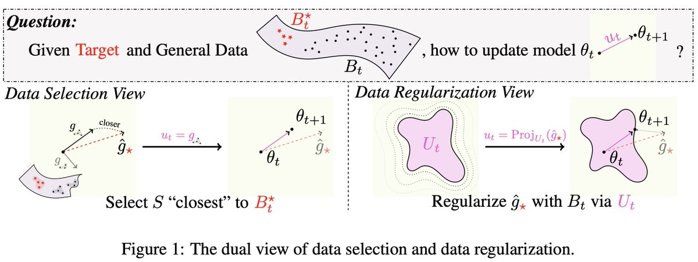
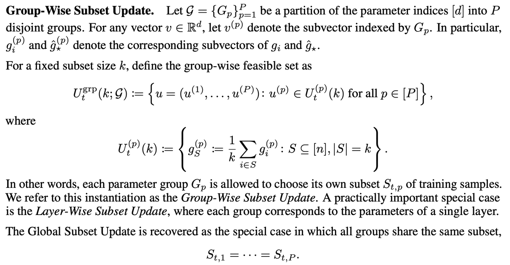
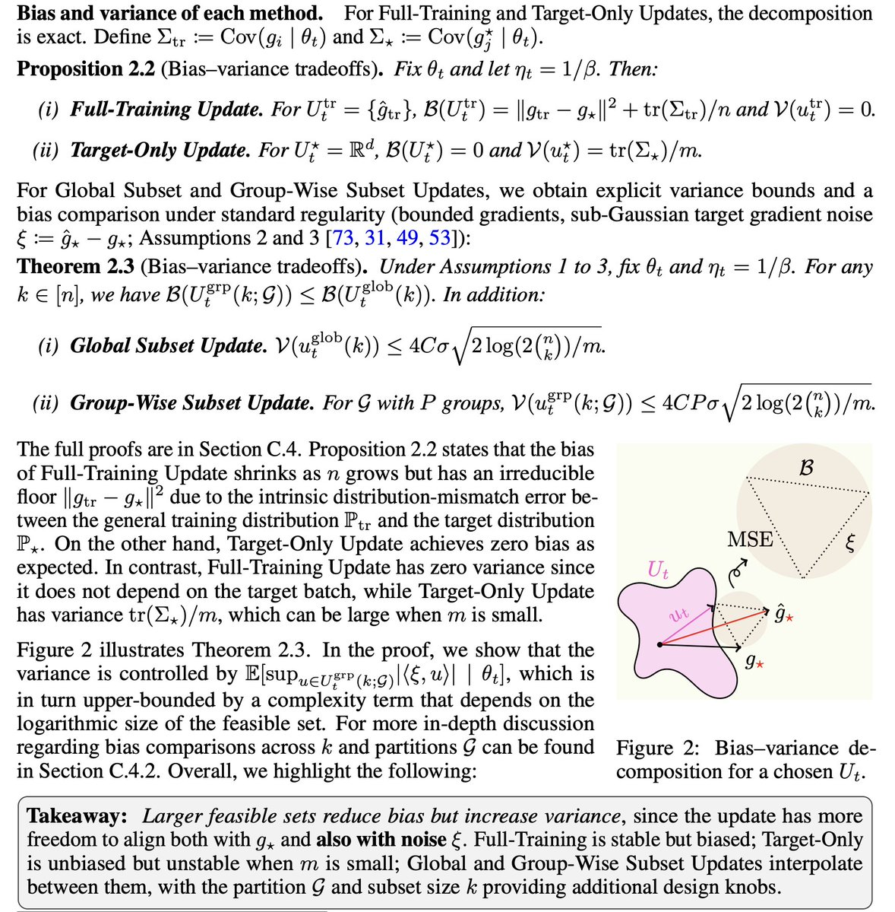
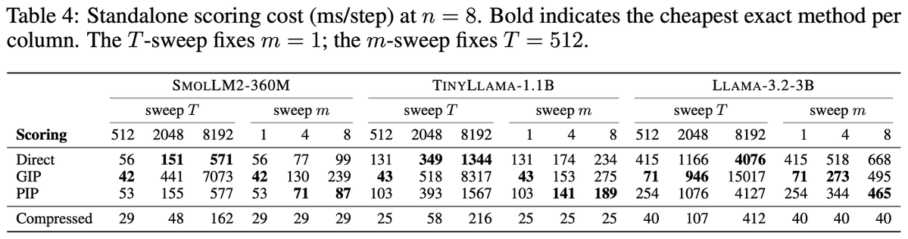
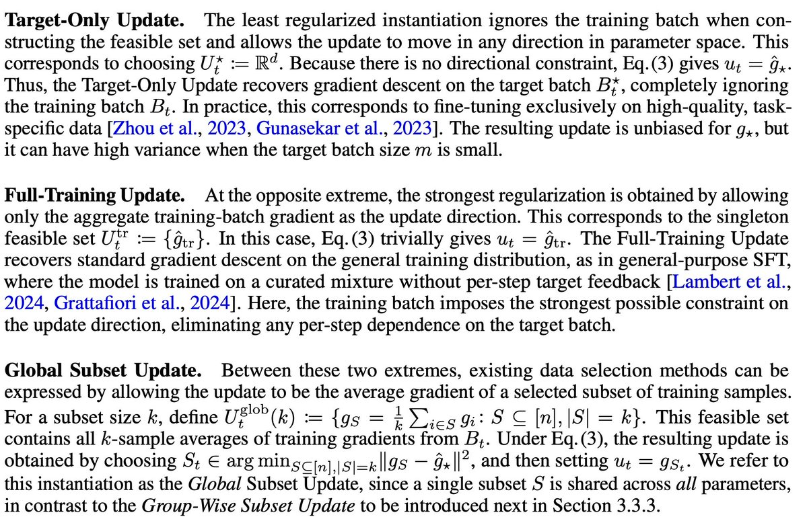
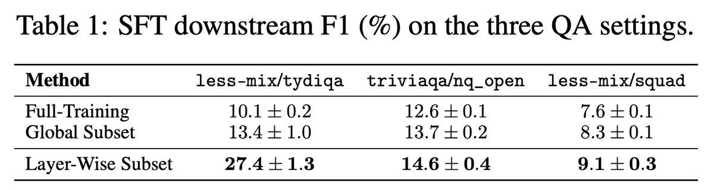
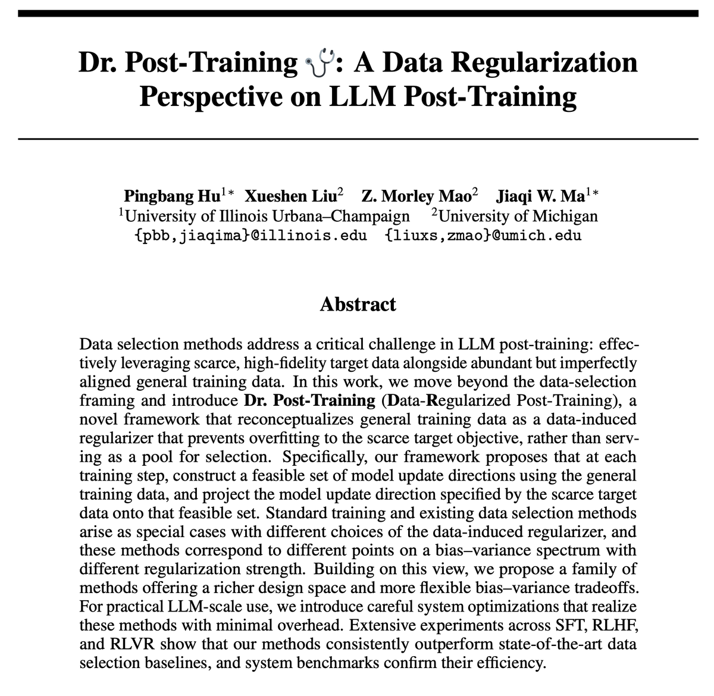

它到底解决什么问题
后训练经常同时面对两类数据：目标数据少但高保真，一般数据多但不完全对齐。
直接用目标数据
例如只有 16 条目标样本、少量 preference labels、少量数学验证样本。优点是目标方向准；缺点是梯度估计噪声大，容易 overfit 或训练不稳定。
直接用一般数据
例如 instruction mixture、通用 rollouts、 broader QA 数据。优点是稳定；缺点是它的平均梯度可能偏离目标任务，带来 distribution mismatch bias。
方法一步一步怎么做
这部分是理解推文的关键：样本选择只是表象，真正被设计的是可行更新集合。
每一步拿两批数据
训练批 \(B_t=\{z_i\}_{i=1}^n\) 来自一般训练分布；目标批 \(B_t^\star=\{z_j^\star\}_{j=1}^m\) 来自小目标集。一般数据提供“能走的方向”，目标数据提供“想走的方向”。
目标数据给出理想梯度
用目标批估计目标梯度 \(\hat g_\star\)。如果完全相信它，就做 target-only fine-tuning：\(u_t=\hat g_\star\)。但当 \(m\) 很小时，这个方向噪声很大。
一般数据构造可行集合
一般训练样本产生 per-sample gradients \(g_i\)。不同方法定义不同的 \(U_t\)：只允许平均一般梯度、允许某个子集平均梯度、或允许每层选不同子集。
把目标梯度投影到可行集合
最终更新方向不是直接用 \(\hat g_\star\)，而是在 \(U_t\) 内找最接近它的方向。论文把这写成欧氏投影：

三个旧方法如何成为特例
| 方法 | 可行集合 \(U_t\) | 直觉 | 主要风险 |
|---|---|---|---|
| Target-Only | \(U_t^\star=\mathbb{R}^d\) | 任何方向都能走，所以直接用目标批梯度。 | 无 bias，但目标批太小时 variance 高。 |
| Full-Training | \(U_t^{tr}=\{\hat g_{tr}\}\) | 只允许走一般数据的平均梯度方向。 | 稳定但有一般分布和目标分布之间的 bias floor。 |
| Global Subset | \(U_t^{glob}(k)=\{g_S:S\subseteq[n], |S|=k\}\) | 从一般批里选 \(k\) 个样本，使用它们的平均梯度。 | 一个全局子集要服务所有参数，可能被少数大幅度层支配。 |
新方法：Group-Wise / Layer-Wise Subset Update
论文的关键新设计是放松 Global Subset 的约束：不再要求全模型共享同一个样本子集，而是把参数分成若干组 \(G=\{G_p\}_{p=1}^P\)，每组自己选 \(k\) 个一般样本。最实用的实例是 Layer-Wise Subset Update：每个线性层独立按本层梯度对齐分数选样本。
直觉上，某个样本可能对 attention Q projection 有用，却对 MLP down projection 没那么有用。全局选样会抹掉这种差异；layer-wise 选样让每层拿到“对本层更新最像目标梯度”的训练样本。

bias-variance 不是口号
论文把“哪个更新方向好”落到目标梯度近似误差上，并把误差拆成可行集合带来的 bias 和有限目标样本带来的 variance。
设真实目标梯度是 \(g_\star\)，使用的更新方向是 \(u\)。论文用条件均方误差衡量更新质量：
在目标损失 \(\beta\)-smooth 且学习率足够小的条件下，目标损失的一步下降受这个 MSE 控制：
因此，MSE 越小，目标损失的 guaranteed progress 越好。然后论文定义：
| 方法 | bias | variance | 解释 |
|---|---|---|---|
| Target-Only | 0 | \(\operatorname{tr}(\Sigma_\star)/m\) | 方向无约束，所以不偏；但目标批越小，噪声越大。 |
| Full-Training | \(\|g_{tr}-g_\star\|^2+\operatorname{tr}(\Sigma_{tr})/n\) | 0 | 不看目标批，所以没有目标采样方差；但一般分布和目标分布错位会留下不可消除 bias。 |
| Global Subset | 介于两端，通常低于 Full-Training | \(\leq \frac{4C\sigma}{\sqrt m}\sqrt{2\log(2\binom{n}{k})}\) | 通过子集让更新更接近目标，但目标噪声可能影响选样。 |
| Group-Wise Subset | \(\leq B(U_t^{glob})\) | \(\leq \frac{4CP\sigma}{\sqrt m}\sqrt{2\log(2\binom{n}{k})}\) | 更细的参数分组降低 bias；理论 variance bound 多一个 \(P\) 因子。 |

为什么它能在 LLM 训练里跑
难点是：标准反传只需要 batch 平均梯度；这个方法需要 per-sample/per-layer 的梯度对齐分数，还要组装选中样本的梯度。
单次 forward/backward
训练批和目标批合并进一次 forward；backward 时保存每层局部需要的 activation 与 output-gradient 信息，在层被处理完后释放，避免两次 backward 或保留完整 autograd graph。
per-sample scoring
精确方法包括 Direct、GIP、PIP；实践默认使用 compressed scoring，把每个样本梯度压到低维后做内积，降低时间和内存成本。
现代训练兼容
论文明确讨论 LoRA、MeSO、activation checkpointing、gradient accumulation。官方 README 也区分了 SFT/RLHF 与 RLVR 两套依赖环境。

实验到底评了什么
它不是只评一个 toy SFT，而是跨 SFT、RLHF、RLVR 三种后训练范式测试同一 data regularization 视角。
SFT：instruction/QA 迁移
模型是 Llama-3.2-1B。一般/目标数据对包括 alpaca/samsum、less-mix/tydiqa、triviaqa/nq_open、less-mix/squad。每步 \(n=8\) 个一般训练样本、\(m=1\) 个目标样本，目标集总共 16 条；LoRA 为默认，同时在 alpaca/samsum 上测试 full-parameter 和 MeSO。
| 方法 | less-mix/tydiqa F1 | triviaqa/nq_open F1 | less-mix/squad F1 |
|---|---|---|---|
| Full-Training | 10.1 ± 0.2 | 12.6 ± 0.1 | 7.6 ± 0.1 |
| Global Subset | 13.4 ± 1.0 | 13.7 ± 0.2 | 8.3 ± 0.1 |
| Layer-Wise Subset | 27.4 ± 1.3 | 14.6 ± 0.4 | 9.1 ± 0.3 |
最强结果是 less-mix/tydiqa，从 10.1 提到 27.4 F1。这说明当一般数据池很杂、和目标任务错位严重时，data regularization 的收益最大。

为什么 Layer-Wise 赢：全局排名被 down_proj 支配
论文的 case study 很重要：在 alpaca/samsum 上，某些 MLP down projection 层的 per-sample score 幅度比第二大层类型高 32 倍。Global Subset 把所有层分数加成一个全局排名，于是全局 ranking 和 down_proj 的相关性约 \(\rho=0.88\)，而 Q/K 层接近 0。这意味着很多层没有真正参与“为自己挑样本”。Layer-Wise 正好修复这个问题。
RLHF：detoxification
模型是 GPT-Neo-2.7B + LoRA，用 TRL + PPO 做 detoxification。训练 reward 来自 LFTW R4 Target toxicity detector，评估 toxicity 使用另一个检测器。对比 standard PPO、IIF、Global Subset、Layer-Wise Subset；还消融 self-reference vs held-out target、avg-reward vs pre-clip PPO target。
结论是四种配置下 Layer-Wise 都取得最高训练 reward 和最低评估 toxicity；self-reference 主要加速早期收敛，held-out target 最终更好；avg-reward target 优于 pre-clip PPO surrogate。

RLVR：MATH + GRPO
模型是 Qwen3-1.7B，用 Verl + GRPO 在 MATH 上训练。每个数学问题生成多个候选解，由 exact-match verifier 给 reward。数据正则化被实例化为 in-run cross-validation：一个 mini-batch 当训练批，另一个当目标批，用 gradient alignment 过滤负对齐样本。
结果是 Global Subset 只提升早期训练，最后接近标准 GRPO；Layer-Wise 的优势持续到最终准确率。
系统开销
| 模型 | Full-Training | Layer-Wise Subset | Global Subset |
|---|---|---|---|
| SmolLM2-360M | 261 ms | 349 ms (+34%) | 309 ms (+18%) |
| TinyLlama-1.1B | 549 ms | 602 ms (+10%) | 593 ms (+8%) |
| Llama-3.2-3B | 1407 ms | 1449 ms (+3%) | 1446 ms (+3%) |
所以“zero overhead”需要谨慎读：论文实际报告的是 3% 到 34% 的 per-step wall-clock overhead；只是随着模型变大，额外开销变得接近可忽略。
哪些地方还不能过度解读
这篇工作有清晰贡献，但它的结论边界也要说清楚。
实验规模仍偏研究验证
SFT 是 1B 级，RLHF 是 GPT-Neo-2.7B，RLVR 是 Qwen3-1.7B。系统 benchmark 包含 3B 模型，但还没有证明在 30B/70B 级生产训练上同样稳定。
任务覆盖不等于普适
SFT 是摘要/QA，RLHF 是 detoxification，RLVR 是 MATH。它支持“跨三类后训练范式有效”，但还不能推出对所有 preference alignment、安全、多轮 agent、代码 RL 都有效。
target set 质量非常关键
框架假设小目标集能表达真实目标方向。如果目标数据本身偏、脏、过窄，投影只会把一般训练方向拉向错误目标。
理论 bound 解释方向，不等于精确预测
Group-Wise 的 variance bound 多 \(P\) 因子，实际效果取决于 bias 降幅是否超过 variance 增幅。论文实验显示 layer-wise 很有效，但最优分组粒度仍是设计问题。
我认为这篇最有价值的地方
真正的贡献是“坐标系改变”。
对工程实践来说，这篇给出的最可操作启发是：当你只有少量高质量目标数据时，不要只在 dataset 层面调 mixture ratio 或 sample score。更应该问：
- 目标数据提供的是哪个训练信号：loss gradient、reward-weighted logprob、PPO surrogate、verifier reward？
- 一般数据应该定义怎样的可行更新集合：全局、层级、模块级、token 级、soft weighting？
- 分组粒度是否会让某些层“被平均掉”，从而拿不到对自己真正有用的样本？
- scoring 成本是否能通过 compressed gradients、PIP、checkpoint-compatible scheduling 被压到总训练成本的边缘？
对研究来说，下一步最自然的是 soft weighting 和 token-level feasible set。硬 top-k 有清晰实现和解释，但它也丢掉了部分连续信息；如果能把每层的样本权重连续化，再结合低维梯度投影，可能会比 hard subset 更稳定。
一句话总结：这条推文值得读，因为它不是只宣传一个新 data selection baseline，而是在提示一个更大的后训练设计范式：用一般数据约束目标梯度，而不是让一般数据替代目标。
证据边界与资料索引
主材料是 X 长帖、作者博客和 arXiv PDF；GitHub README 用来核对实现状态和实验复现入口。
X 长帖
作者用 9 条左右的 thread 讲核心设定：一般数据 \(B_t\)、小目标集 \(B_t^\star\)、可行更新集合 \(U_t\)、bias-variance tradeoff、group-wise/layer-wise selection、SFT/RLHF/RLVR 结果和系统优化。
论文与博客
论文题名为 Dr. Post-Training: A Data Regularization Perspective on LLM Post-Training，作者是 Pingbang Hu、Xueshen Liu、Z. Morley Mao、Jiaqi W. Ma。博客给了更紧凑的图解和实验摘要。
实现仓库
官方仓库是 TRAIS-Lab/Dr.Post-Training。README 显示 SFT/RLHF 采用 plain PyTorch；RLVR 使用 Verl + vLLM；SFT/RLHF 与 RLVR 需要不同 conda 环境。
